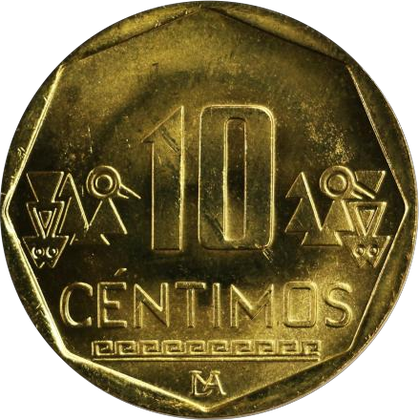
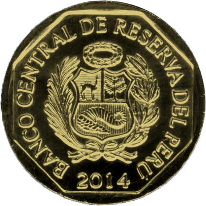

Moneda de S/ 0.10 del sistema monetario peruano.

Diseños encontrados en la ciudadela precolombina de Chan Chan.

Escudo de Armas del Perú y año de acuñación.
Esta moneda cuenta en el reverso con diseños encontrados en la ciudadela precolombina de "Chan Chan", ubicada en la ciudad de Trujillo, al norte del Perú.
En el anverso lleva el Escudo de Armas del Perú y, alrededor, la leyenda "BANCO CENTRAL DE RESERVA DEL PERÚ" y el año de acuñación.
| Aleación | Diámetro (mm) | Espesor (mm) | Peso (g) | Canto |
|---|---|---|---|---|
| Latón | 20,50 | 1,44 | 3,50 | Liso |